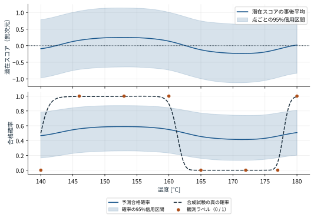
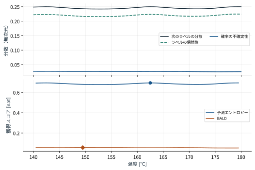

第9章 ガウス過程による分類
学習目標 Bernoulli尤度で合否を表し、潜在事後から合格確率とその信用区間を求める。変分下界が何を近似するかを説明し、別に取得したラベルで予測を評価する。
9.1 8件の合否から確率を予測する
第4章では、温度から強度 [MPa] を予測しました。第8章と同じ合成試験を使い、この章では温度ごとの0・1ラベルから次の合格確率を学習します。合否しか保存されていない8件を初期データとし、観測した温度の間で合格確率を予測します。真の強度 \(g(x)\) [MPa] はラベルの生成に使い、GP分類器には温度と合否のみを渡します。
第9章のNotebook と同じフォルダで実行します。predict_proba は最後の軸に \(\Pr(Y=0)\) と \(\Pr(Y=1)\) をこの順で返します。
import torch
from gpytorch.kernels import MaternKernel, ScaleKernel
from robotorchan.models.classification import BinarySingleTaskGPClassifier
from classification_experiment import reveal_labels, uniforms
from experiment import DTYPE, SEED, setup
setup()
torch.set_default_dtype(DTYPE)
pool = torch.linspace(0, 1, 81, dtype=DTYPE).unsqueeze(-1)
indices = torch.tensor([0, 12, 26, 40, 50, 64, 74, 80])
train_x = pool[indices]
draws = uniforms(pool, SEED + 9)
train_y = reveal_labels(train_x, draws[indices])
torch.manual_seed(SEED + 9)
kernel = ScaleKernel(MaternKernel(nu=2.5))
kernel.base_kernel.lengthscale = 0.18
inducing = torch.linspace(0, 1, 9, dtype=DTYPE).unsqueeze(-1)
model = BinarySingleTaskGPClassifier(
train_x, train_y, covar_module=kernel, inducing_points=inducing,
learn_inducing_points=False,
)
model.fit(epochs=120, lr=0.03)
test_x = (torch.arange(120, dtype=DTYPE) + 0.37).unsqueeze(-1) / 120
with torch.no_grad():
p = model.predict_proba(test_x)[..., 1]
labels = model.predict_class(test_x, threshold=0.5)最初の評価点 140.12 °C での予測合格確率は 0.468 でした。
図の上段は無次元の潜在スコア、下段はそのスコアから得る合格確率です。合格確率の青線は、「新しい試験片1個の合否」を繰り返し予測するときの合格の確率です。青い帯は合格確率そのものについての不確実性を表します。例えば帯が狭く、予測が0.5付近なら、「合否は五分五分だとかなり分かっている」という読み方になります。

9.2 潜在関数とBernoulli尤度
入力 \(x_i\) のラベル \(y_i\) は0または1です。潜在関数 \(f\) に第3章と同じGP事前 \(\mathcal{GP}(m_0,k_\theta)\) を置き、\(f_i=f(x_i)\) とします。\(m_0\) は事前平均関数、\(k_\theta\) はハイパーパラメータ \(\theta\) を持つカーネルです。ここでの \(f_i\) は無次元の分類スコアです。関数 \(s:\mathbb R\to(0,1)\) がスコアを確率に変換します。\(s\) は逆リンク関数です。各観測のラベルは潜在スコアを与えると条件付きで独立と仮定し、1件のBernoulli尤度は
\[ p(y_i\mid f_i)=s(f_i)^{y_i}\{1-s(f_i)\}^{1-y_i} \]
です。例えば \(y_i=1\) なら \(s(f_i)\)、\(y_i=0\) なら \(1-s(f_i)\) が尤度になります。条件付き独立は、\(f\) を積分した後のラベル同士の独立を意味しません。近い温度のスコアはGPのカーネルを通じて相関します (Rasmussen と Williams 2006年, 第3章)。
| リンク（確率からスコアへ） | 逆リンク \(s(t)\) | スコア \(t=2\) での確率 |
|---|---|---|
| Probit \(\Phi^{-1}\) | \(\Phi(t)\) | 約0.977 |
| Logit \(p\mapsto \log(p/(1-p))\) | \(1/(1+\exp(-t))\) | 約0.881 |
表の同じ \(t\) は同一の潜在尺度で逆リンクの形を比べるための値です。学習した各モデルでは潜在関数の尺度も推定されます。教材の公開API robotorchan.models.classification.BinarySingleTaskGPClassifier は、GPyTorchの BernoulliLikelihood を使用し、逆リンクはProbitです (robotorchan contributors 2026年; GPyTorch contributors, 日付なし-a)。
9.3 この事後分布を近似する理由
\(n\) 件の入力 \(X=(x_1,\dots,x_n)\)、ラベル \(\mathbf y=(y_1,\dots,y_n)^\mathsf T\)、潜在値 \(\mathbf f=(f_1,\dots,f_n)^\mathsf T\) を考えます。ここではGPのハイパーパラメータをいったん固定します。Bayesの定理は
\[ p(\mathbf f\mid X,\mathbf y) =\frac{p(\mathbf f\mid X)\prod_{i=1}^n p(y_i\mid f_i)} {p(\mathbf y\mid X)} \]
です。分母は分子を \(\mathbf f\) について積分した周辺尤度です。第4章のガウス回帰では、事前と尤度の対数が \(\mathbf f\) の二次式なので、積を正規分布として平方完成できました。ここでは、例えば合格の寄与が \(\log\Phi(f_i)\) となり、\(f_i\) の二次式ではありません。事後は一般に非ガウスで、正規分布の条件付き公式だけでは得られません。Laplace近似、期待値伝播、変分推論、モンテカルロ法などが候補になります (Rasmussen と Williams 2006年, 第3章)。
変分下界を作る
変分推論では計算しやすい分布の族を決め、その中で事後を近似する分布を探します。補助の入力 \(Z=(z_1,\dots,z_M)\) における潜在値 \(\mathbf u=f(Z)\) を誘導変数と呼びます。\(M\) は誘導点数です。訓練入力の事前と同じGPから、結合事前を \(p(\mathbf f,\mathbf u)=p(\mathbf f\mid\mathbf u)p(\mathbf u)\) と分解します。式では固定した \(X,Z,\theta\) を省略します。
近似分布を \(Q(\mathbf f,\mathbf u)=p(\mathbf f\mid\mathbf u)Q(\mathbf u)\) と置き、\(Q(\mathbf u)\) を学習可能な多変量正規分布とします。事前分布 \(p(\mathbf u)\) の共分散が正定値で、以下の期待値とKLが有限とします。\(\mathrm{KL}(Q\|P)=\mathbb E_Q[\log(Q/P)]\) は、分布 \(Q\) と \(P\) のずれを測る非負の量です。Bayesの定理で真の結合事後を代入すると、周辺対数尤度は
\[ \begin{aligned} \log p(\mathbf y) &=\mathcal L+\mathrm{KL}\bigl(Q(\mathbf f,\mathbf u)\| p(\mathbf f,\mathbf u\mid\mathbf y)\bigr),\\ \mathcal L &=\sum_{i=1}^n\mathbb E_{Q(f_i)}[\log p(y_i\mid f_i)] -\mathrm{KL}\bigl(Q(\mathbf u)\|p(\mathbf u)\bigr). \end{aligned} \tag{9.1}\]
第一式は、KLの定義に \(p(\mathbf f,\mathbf u\mid\mathbf y)=p(\mathbf y,\mathbf f,\mathbf u)/p(\mathbf y)\) を入れ、\(\log p(\mathbf y)\) を期待値の外に出して得ます。残る \(\mathbb E_Q[\log p(\mathbf y,\mathbf f,\mathbf u)-\log Q(\mathbf f,\mathbf u)]\) が \(\mathcal L\) です。第二式では、尤度がラベルごとに積に分かれることと、\(Q/p\) の比から \(p(\mathbf f\mid\mathbf u)\) が消えることを使いました。\(\mathcal L\) は対数周辺尤度の下界なので、ELBO（evidence lower bound）と呼びます。第一項は既知ラベルへの適合、第二項は誘導変数の近似分布が事前から離れることへの罰則です。同じモデルのもとでは、下界を上げるほど制約した分布族での事後へのKLが小さくなります。ハイパーパラメータも同時に変える場合は、近似とモデルの両方が更新されます (Hensman ほか 2015年; GPyTorch contributors, 日付なし-b)。
この教材では誘導入力を \([0,1]\) の等間隔9点に固定します。Matérn 5/2カーネルの長さ尺度の初期値を0.18として、カーネルのパラメータと変分分布をAdamで学習します。小例の初回学習は全8件を使って120エポックです。fit(epochs=120, lr=0.03) が、make_mll で構築した公開API VariationalELBO を使います。期待対数尤度は数値求積で評価します。誘導点の配置や数、学習率、最適化の停止位置で結果は変わります。誘導点の数が訓練数より少ないことは、この定式化を使う必須条件ではありません。
9.4 近似潜在事後から合格確率を計算する
新しい温度 \(x\) のスコア \(F_x\) の近似事後を \(\mathcal N(m_x,s_x^2)\) とします。これは、誘導変数の正規分布とGPの条件付き正規分布から得る周辺分布です。第4章ではガウス観測から事後を直接求めました。この章では、変分学習で得た近似事後を出発点にします。次のラベルの合格確率 \(\bar p_x\) は、\(P_x=\Phi(F_x)\) の事後平均です。\(F_x\) と独立な標準正規変数 \(V\) を用意すると、
\[ \begin{aligned} \bar p_x&=\mathbb E[\Phi(F_x)] =\Pr(V\le F_x)=\Pr(F_x-V\ge 0)\\ &=\Phi\!\left(\frac{m_x}{\sqrt{1+s_x^2}}\right). \end{aligned} \tag{9.2}\]
最後の等式で \(F_x-V\sim\mathcal N(m_x,1+s_x^2)\) を使いました。この式は与えた近似正規分布に対して解析的に正確です。近似の対象は真の潜在事後です。\(\Phi(m_x)\) だけを使うと潜在側の分散が式から消えます。例えば \(m_x=1\) で \(s_x^2=0\) なら約0.841、\(s_x^2=3\) なら約0.691です。Logitの逆リンクに替える場合、一般には数値求積やモンテカルロ積分を用います (Rasmussen と Williams 2006年, 第3章; GPyTorch contributors, 日付なし-a)。
\(z_{.975}=\Phi^{-1}(0.975)\) とします。\(\Phi\) は単調増加なので、\(P_x\) の点ごとの等裾95%信用区間の端点は \(\Phi(m_x-z_{.975}s_x)\) と \(\Phi(m_x+z_{.975}s_x)\) です。帯が複数温度にまたがっても、全曲線が同時に帯へ入る確率を95%と解釈することはできません。\(Y_x\) の取り得る値は0か1で、帯をその予測範囲として読みません。predict_proba で平均確率を、probability_posterior と credible_interval で確率の区間を求めます。
241点で predict_proba とProbitの解析式を照合した最大絶対差は 1.11e-16 でした。48点Gauss–Hermite求積と公開APIの差は最大 3.33e-16 でした。
9.5 ラベルの揺れと、確率についての不確実性
\(F_x\) を取得済みデータで条件付け、次のラベルは \(F_x\) が与えられればBernoulli\((P_x)\) とします。全分散の法則は
\[ \bar p_x(1-\bar p_x) =\mathbb E[P_x(1-P_x)]+\mathrm{Var}(P_x) \tag{9.3}\]
です。左辺は次の1ラベルの予測分散です。右の第1項は確率が分かっても残るラベルの揺れ、第2項は合格確率についての事後不確実性です。第8章の予測エントロピーとBALDは、同じ二つの側面を情報の尺度で区別します。分散の分解と相互情報量は別の量です。図は上段に分散、下段にnatで測る獲得スコアを示します。

予測エントロピーが選んだのは 162.5 °C、BALDが選んだのは 149.5 °C でした。BALDの候補でラベル 1 を記録し、9件で学習し直しました。
9.6 合否判定と確率予測を別々に評価する
確率を判定に変えるとき、\(\bar p_x\ge0.5\) は二つの誤りを同じ費用とした場合の閾値です。誤って合格とする費用を \(c_{\mathrm{FP}}>0\)、誤って不合格とする費用を \(c_{\mathrm{FN}}>0\)、正しい判定の費用を0とします。合格と判定するときの期待費用は \((1-\bar p_x)c_{\mathrm{FP}}\)、不合格と判定するときは \(\bar p_xc_{\mathrm{FN}}\) です。前者が後者以下になる条件から、合格判定の閾値は \(c_{\mathrm{FP}}/(c_{\mathrm{FP}}+c_{\mathrm{FN}})\) になります。これは試験片の強度を合否に変える74 MPaの規格値とは役割が異なります。
独立な評価点 \(x_j\) とそのラベル \(y_j\) に対し、合格確率の予測を \(p_j\) とします。誤分類率は閾値に依存します。Brier損失と対数損失は確率を直接評価します。
| 指標 | 1件の損失 |
|---|---|
| 誤分類率に用いる損失 | 予測ラベルと \(y_j\) が異なれば1、一致すれば0 |
| Brier損失 | \((p_j-y_j)^2\) |
| 対数損失 | \(-y_j\log p_j-(1-y_j)\log(1-p_j)\) |
評価点で各損失を平均します。Notebookの対数損失は、浮動小数点で \(\log 0\) を評価しないよう、確率を \([10^{-12},1-10^{-12}]\) に丸め込みます。評価温度120点は候補グリッドと重ならず、ラベルも別の乱数で発生させます。BALDの候補を1件測り、同じ設定で再学習しても、個々の評価指標の改善は保証されません。
| 訓練データ | Brier損失 | 対数損失 [nat/件] | 誤分類率（閾値0.5） |
|---|---|---|---|
| 初期8件 | 0.2004 | 0.5931 | 10.8% |
| BALDで1件追加 | 0.1575 | 0.5014 | 10.8% |
希少な不良では、全件を合格と判定しても誤分類率が低く見える場合があります。運用ではクラス別の誤りや判定コストを見ます。例えば「0.8と予測した試験片のうち約8割が合格するか」を点検するのが確率の較正の考え方です。少数データでは温度域ごとに評価のばらつきも大きく、ラベルを取得した候補だけで較正や実用性能を判断すると、選択方策の偏りが影響します。
9.7 演習とまとめ
- 確認。 \(m_x=1\) を固定して \(s_x^2=0,3,8\) の合格確率を計算してください。次に \(m_x=0\) で \(s_x^2\) を変えて、確率の平均と信用区間の両方を考えてください。
- 操作。 Notebookの判定閾値を0.5から0.8へ変え、誤分類率と、Brier損失・対数損失を比較してください。同じモデルのままならどの指標が変わらないでしょうか。
- 発展。 誘導点の数、位置、エポック数のうち一つだけを変更して再学習し、予測確率、信用区間、BALDの候補、評価損失を比較してください。評価ラベルは変更しないでください。
- 導出。 式 9.3 の右辺を展開し、\(\mathbb E[P_x^2]\) の項が相殺されることを確かめてください。
二値のGP分類では、GP事前を潜在スコアに置き、逆リンクで確率へ写します。非ガウス尤度に対する潜在事後の推論と、得た事後を使うProbitの周辺化では、近似の意味が異なります。分類GPの基礎はRasmussenとWilliamsの第3章、誘導変数を用いた変分近似はHensmanらを参照してください (Rasmussen と Williams 2006年; Hensman ほか 2015年)。
第10章では、同じ合成材料に保持時間を加え、表で管理した測定を候補提案と確認試験につなげます。